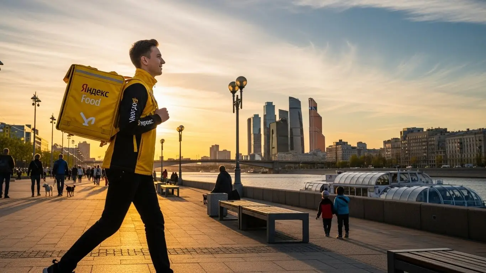
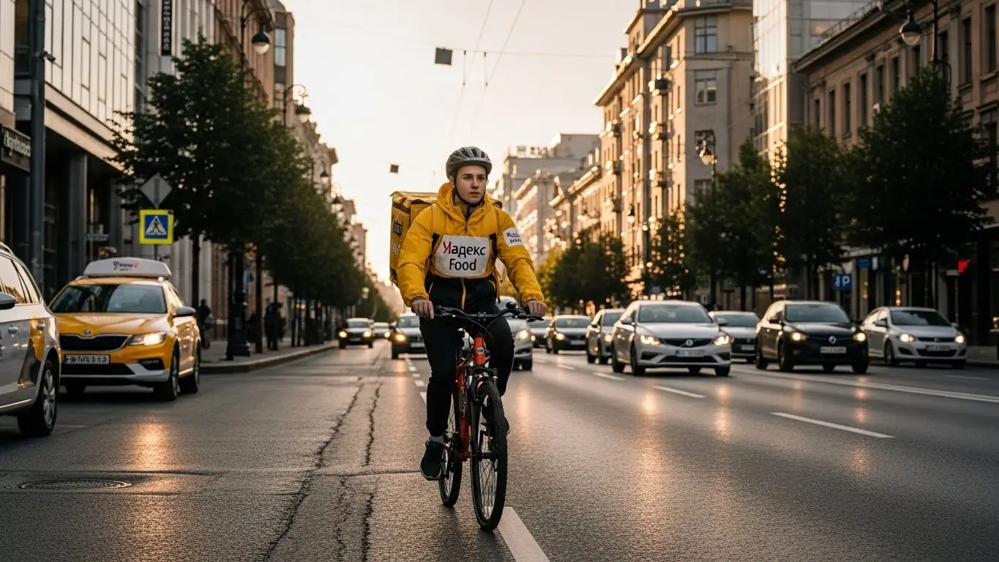

Доход курьера Яндекс Еда в Махачкале: обзор работы в 2025-2026
- Работа курьером Яндекс Еды в Махачкале: для кого эта вакансия и что вы получите
- Сколько вы будете зарабатывать курьером в Махачкале: калькулятор дохода и разбор выплат
- Реальный заработок курьера в Махачкале: смены и месячный доход
- График работы и форматы занятости
- Требования к кандидату и документы
- Самозанятость, налоги и юридическая чистота
- Пошаговое оформление и первый выход на линию в Махачкале
- Пешком, на вело или на авто: что выгоднее в Махачкале
- Районы, маршруты и «топовые» зоны заказов в Махачкале
- Безопасность, страховка, штрафы и оплата простоя
- Плюсы и возможные минусы работы курьером в Махачкале
- Реальные истории и отзывы курьеров из Махачкалы
- Ответы на главные вопросы о работе курьером Яндекс Еды в Махачкале
- Короткие ответы на главные вопросы
- Итоги и ваш следующий шаг
Все города
Салам! Думаешь, работа курьером в Махачкале — это просто сел на мопед или велик и поехал за легкими деньгами, которые обещают в рекламе? Как бы не так. Я тоже так думал, пока не столкнулся с реальностью: вечные пробки на Гамидова и Шамиля, риск «убить» подвеску на разбитых улочках спальников и непонятные штрафы, которые съедают половину дневного заработка. Если ты ищешь правду, а не красивую картинку, то ты по адресу. Здесь говорим про настоящую работу курьером Яндекс Еда в Махачкале, без прикрас.
Поверь, без понимания местной «кухни» ты или выгоришь за месяц, или будешь работать в минус. Потому что твой реальный доход — это не просто сумма за заказы. Из неё нужно вычесть расходы на бензин или ремонт велика, налог для самозанятых и обед. А еще есть рейтинг, который решает, дадут ли тебе жирный заказ из дорогого ресторана или отправят за пачкой чипсов на другой конец города. Большинство новичков у нас в городе наступают на одни и те же грабли: гоняются за заказами в центре, когда весь кэш в спальных районах, или не учитывают, что в +35 пешком много не наработаешь. Если хочешь сразу увидеть все условия, посмотреть калькулятор дохода и подать заявку, то вся официальная информация про работу курьером Яндекс Еда в Махачкале собрана на специальной странице.
В этом гиде мы всё разложим по фактам. Честно посчитаем, сколько чистыми остается в кармане у пешего, вело- и автокурьера. Разберём, на чем выгоднее всего работать именно в махачкалинских реалиях. Выясним, в каких районах всегда есть заказы, а куда лучше не соваться. Покажу на примерах, как погода, праздники и даже время намаза влияют на заработок. И, конечно, расскажу про штрафы — за что они прилетают и как их не получать. Никакой воды, только цифры и проверенные на своей шкуре советы.
Меня зовут Алексей. Я сам не один год откатал с желтым рюкзаком по Махачкале, а сейчас у меня свой небольшой таксопарк-партнер, так что я вижу всю эту систему с двух сторон. Никакой рекламной шелухи и обещаний золотых гор не будет. Только мясо, только реальный опыт и честные ответы на твои вопросы. Готов? Тогда давай по порядку, сейчас всё разложу по полочкам.
А чтобы тебе было проще сориентироваться, вот короткий гид по ключевым темам статьи.
Что ты точно узнаешь из этого разбора
В этой статье ты ТОЧНО узнаешь:
- Сколько РЕАЛЬНО можно заработать в Махачкале за смену, если работать пешком, на велосипеде или на авто?
- В каких районах Махачкалы больше всего заказов и как выбирать «фиолетовые зоны», чтобы не кататься впустую?
- Что такое самозанятость, какой налог нужно платить и сложно ли это всё оформить?
- Как погода, время суток и пробки на Шамиля влияют на доход и как это использовать в свою пользу?
- Что выгоднее для Махачкалы — работать в центре пешком или на машине по всему городу, включая пригород?
- За что могут снизить рейтинг или оштрафовать, и что такое «оплата простоя», если заказов вдруг нет?
А если тебе некогда читать всю статью — переходи сразу к заключению, где ты найдёшь короткие ответы на все эти вопросы и указания, в каких разделах искать подробности.
И сразу — наглядная инфографика с основными цифрами для Махачкалы.
Работа курьером в Махачкале в цифрах
Работа курьером Яндекс Еды в Махачкале: для кого эта вакансия и что вы получите
Кому подойдёт эта работа в Махачкале
Скажем честно: эта работа не для всех, но для многих в Махачкале она станет отличным решением. В первую очередь, это идеальная подработка для студентов. Ты сам решаешь, когда выходить на линию — можно после пар на пару часов, можно только по выходным. Никто не будет стоять над душой с графиком, так что учёбе это не помешает. То же самое касается тех, у кого уже есть основная работа, но нужны дополнительные деньги. Вечерние смены или работа в субботу и воскресенье — хороший способ пополнить бюджет.
Также это отличный старт для тех, у кого пока нет опыта. Эта вакансия не требует диплома или резюме на пять страниц. Главное — быть ответственным, вежливым и иметь смартфон. Ну и конечно, это работа для водителей. Если у тебя есть своя машина, ты можешь зарабатывать больше, выполняя заказы по всему городу. По сути, это для любого, кому важен свободный график, быстрые деньги и понятные условия.
Главные преимущества для жителей районов Ленинский, Советский, Кировский
Главный плюс, который многие недооценивают, — возможность работать рядом с домом. Тебе не нужно каждое утро ехать через всю Махачкалу в офис и обратно, теряя время и деньги на дорогу. Ты просто открываешь приложение «Яндекс Про», выбираешь свой район и начинаешь выполнять заказы от сервисов Яндекс Еда и Яндекс Доставка. Это особенно удобно для жителей крупных районов города.
Например, живёшь ты в Ленинском районе, в районе Редукторного посёлка — можешь брать заказы из местных кафе и магазинов, доставляя их по соседним улицам. Обитаешь в Советском районе, ближе к центру, в районе проспекта Имама Шамиля или Гамзатова — там вообще золотая жила, заказы есть всегда. То же самое касается и Кировского района, включая Семендер. Ты работаешь на знакомой территории, где знаешь каждый двор, что сильно ускоряет доставку.
Кратко о доходе и условиях
Если говорить о деньгах, то в Махачкале цифры вполне достойные. При частичной занятости, работая по 3–4 часа в день, можно спокойно делать 1000–1500 рублей. Если же рассматривать это как основную работу и выходить на линию на полный день, то пеший или велокурьер может рассчитывать на доход до 50 000 рублей в месяц. Водитель-курьер на своем авто при полной занятости зарабатывает больше — до 70 000–85 000 рублей. Это не фиксированная зарплата, твой доход напрямую зависит от количества выполненных заказов.
Ключевые условия работы просты и прозрачны. Во-первых, свободный график — ты сам планируешь свои смены через приложение. Во-вторых, быстрые выплаты — большинство курьеров оформляют самозанятость, что позволяет получать деньги на карту ежедневно, не дожидаясь конца месяца. В-третьих, начать можно без опыта — всему необходимому научат на коротком онлайн-инструктаже. Никаких сложных собеседований.
Вот живой пример. Парень, студент ДГУ, живет в Советском районе. Раньше просил деньги у родителей. Решил попробовать подработку курьером. Выходит на 3-4 часа после пар, в основном работает пешком в центре, где много кафе. В первый же месяц, работая 4-5 дней в неделю, он заработал около 25 000 рублей. Говорит, что теперь хватает и на свои расходы, и учебе это не мешает.
В общем, эта работа — хороший вариант для тех, кто ценит свободу и хочет получать деньги здесь и сейчас. Главное — работать в удобном для себя районе и понимать, что доход зависит только от тебя. Мой совет: начни с коротких смен в своем районе, чтобы втянуться, а дальше уже сам поймешь, какой график и загрузка тебе подходят.
Сколько вы будете зарабатывать курьером в Махачкале: калькулятор дохода и разбор выплат
Из чего складывается доход курьера
Многих новичков пугает, что здесь нет фиксированного оклада. На самом деле, система прозрачная, и твой заработок складывается из нескольких частей. Поняв, как это работает, ты сможешь влиять на свой доход.
Вот основные компоненты:
- Базовая оплата за заказ. Это фиксированная сумма за то, что ты забрал и доставил посылку.
- Оплата за расстояние. Каждый километр твоего пути от ресторана до клиента оплачивается дополнительно.
- Повышающие коэффициенты. В приложении «Яндекс Про» есть карта спроса. В часы пик (обед, ужин) или в плохую погоду некоторые зоны окрашиваются в фиолетовый цвет. Заказы из таких зон оплачиваются с множителем — в 1.5, 2, а то и в 3 раза дороже.
- Бонусы. Сервис часто предлагает персональные цели. Например, выполни 10 заказов за день и получи дополнительно 500 рублей.
- Чаевые. Все чаевые, которые оставляют клиенты через приложение, полностью твои. Сервис не берет с них комиссию.
- Оплата простоя. Важное преимущество. Если ты вышел на запланированную смену, а заказов мало, сервис всё равно начислит минимальную гарантированную оплату за час. Ты не останешься с нулём.
Как пользоваться калькулятором дохода
Чтобы ты мог прикинуть свой потенциальный заработок, на этой странице есть специальный калькулятор. Пользоваться им очень просто. Сначала убедись, что выбран твой город — Махачкала. Затем укажи, как планируешь доставлять заказы: пешком, на велосипеде или на личном автомобиле.
Далее, с помощью ползунков, выбери примерное количество часов, которое ты готов работать в день, и количество рабочих дней в неделю. Калькулятор автоматически посчитает и покажет примерный доход за день и за месяц. Понятно, что это ориентировочные цифры, реальный заработок может быть и выше, если ловить бонусы и зоны с повышенным спросом. Но для общего понимания, на что можно рассчитывать, этот инструмент очень полезен.
Прикинь свой доход в Махачкале
8 часов
5 дней
Примерный доход в месяц:
Это примерный расчёт на основе средней ставки в Махачкале (~400 ₽/час). Реальный доход зависит от спроса, бонусов и вашего рейтинга.
Чтобы узнать подробнее об условиях и заполнить анкету, переходи на официальную страницу: работа курьером Яндекс Еда в твоём городе. Там ты найдешь актуальную информацию, ответы на вопросы и сможешь сразу подать заявку.
Примеры расчёта для пешего, вело- и авто‑курьера в Махачкале
Давай разберём на конкретных примерах, сколько можно заработать в Махачкале, работая в разных форматах.
1. Пеший курьер-студент. Работает в центре, в Советском районе, где много кафе и небольшие расстояния. Выходит на 4 часа по вечерам в будни и на 6 часов в субботу. В среднем за вечернюю смену выходит 1000–1400 рублей. За неделю набегает около 7000–8000 рублей. В месяц такая подработка приносит около 30 000 рублей.
2. Велокурьер. Работает по 6–8 часов 5 дней в неделю, в основном в спальных районах — например, между Ленинским и Кировским. За счёт скорости выполняет больше заказов, чем пеший. Его дневной заработок составляет примерно 2000–2800 рублей. В месяц выходит в районе 45 000–55 000 рублей. Плюс экономия на проезде и бесплатный фитнес.
3. Водитель-курьер на своём авто. Это самый доходный вариант. Работает полный день, 8–10 часов, 5–6 дней в неделю. Берёт заказы по всему городу, включая дальние доставки в пригород, например, в Семендер. Часто возит крупные и дорогие заказы из гипермаркетов. Его доход за смену может достигать 3500–4500 рублей. В месяц, даже с учётом расходов на бензин, чистыми выходит 70 000–85 000 рублей.
У меня в парке есть водитель, Магомед. Он работает на своей "Приоре". Сначала выходил только по вечерам после основной работы, брал заказы в своем Кировском районе. Заметил, что в плохую погоду и по вечерам пятницы коэффициенты взлетают. Начал специально ловить такие слоты. За 4-часовой слот в дождливый вечер пятницы он как-то сделал 2500 рублей. Сейчас он ушел с основной работы и катает полный день. В месяц чистыми, за вычетом бензина, у него выходит около 75 000 рублей.
В итоге, твой заработок — это не случайность, а вполне прогнозируемая вещь. Он складывается из понятных составляющих, и ты можешь на него влиять. Мой совет: изучи карту спроса в приложении «Яндекс Про» и старайся выходить на линию, когда зоны в твоём районе "горят" — так ты за то же время заработаешь значительно больше.
Реальный заработок курьера в Махачкале: смены и месячный доход
Давай сразу к главному — к деньгам. Забудь про рекламные обещания о заоблачных цифрах. Я расскажу, сколько реально можно положить в карман, работая курьером в сервисах вроде Яндекс Еды в Махачкале, и от чего это зависит. Твой доход — это не фиксированная зарплата, а результат твоей скорости, смекалки и умения быть в нужном месте в нужное время. Цифры, которые я назову, — это то, что парни у меня в парке и я сам видим в отчётах каждый день.
Диапазон дохода для подработки и полной занятости
Если ты ищешь подработку на 2–4 часа в день, чтобы были деньги на свои расходы, картина примерно такая. Пеший курьер в центре, например, в районе проспекта Гамзатова, где много кафе и короткие расстояния, может сделать 700–1200 рублей за такую короткую смену. Курьер на велосипеде заработает чуть больше, около 900–1600 рублей, так как он быстрее и успевает захватить больше заказов. Курьер на автомобиле на подработке в пиковые часы может получить 1300–2200 рублей уже за вычетом бензина. В месяц это выливается в 15–30 тысяч для пеших и вело, и до 45 тысяч для авто.
При полной занятости, когда ты на линии 8–10 часов, цифры совсем другие. Здесь уже можно говорить о полноценной зарплате. Пеший курьер, который хорошо знает свой район и много ходит, может зарабатывать 2000–3000 рублей в день, то есть 45–65 тысяч в месяц. Велокурьер за счёт скорости поднимает планку до 2500–3800 рублей в день, а это уже 55–80 тысяч в месяц. Самый высокий доход, конечно, у водителей-курьеров: 3500–5500 рублей в день — обычное дело. В месяц при стабильной работе выходит 80–120 тысяч рублей. Это реальная зарплата курьера в Махачкале при условии, что ты не ленишься и работаешь с головой.
Как район, время суток и погода влияют на доход
Твой заработок — это не просто плата за время, он постоянно меняется. Главные факторы — это спрос и количество курьеров на линии. Утром заказов мало, но к обеду, с 12 до 15 часов, город просыпается, и начинаются заказы из ресторанов в Яндекс Еде. Настоящий пик — это вечер, с 18 до 22 часов, и все выходные. В это время в приложении Яндекс Про карта «горит» фиолетовым — это зоны с повышенным коэффициентом. Заказ, который днём стоил 150 рублей, вечером может стоить 250–300.
Погода в Махачкале — твой лучший друг. Как только начинается дождь или сильный ветер с моря, многие курьеры уходят с линии, а люди, наоборот, начинают заказывать еду и товары из Яндекс Доставки на дом. Спрос взлетает, коэффициенты растут, а клиенты становятся щедрее на чаевые. То же самое происходит в сильную летнюю жару или в редкие снежные дни. Районы тоже играют роль: в центре и в густонаселённых спальниках вроде Редукторного посёлка заказов всегда больше. А вот в частном секторе или на окраинах спрос ниже, но и конкуренции меньше.
Советы по увеличению заработка от опытных курьеров
Чтобы зарабатывать больше, не обязательно работать сутками. Во-первых, планируй свои смены. Заранее бронируй слоты на вечернее время и выходные через приложение «Яндекс Про» — это гарантирует тебе приоритет в заказах. Во-вторых, изучи карту спроса. Не гоняйся за одним заказом через весь город в «фиолетовую» зону. Лучше выбери локацию, где много ресторанов и жилых домов, и работай там стабильно.
Ещё один совет — будь гибким. Если у тебя есть и велосипед, и машина, используй их по ситуации. В час пик в центре Махачкалы, когда всё стоит в пробках на Шамиля или Ярагского, велосипед будет быстрее. А для дальних заказов в Каспийск или в плохую погоду лучше взять машину. И не забывай про человеческий фактор: будь вежлив с клиентами, и чаевые станут приятным дополнением к твоему доходу. Хороший рейтинг в приложении и аккуратный внешний вид, включая чистый термокороб, — это тоже ключ к стабильному потоку хороших заказов.
Из практики: парень-студент у меня работал на велосипеде. Поначалу выходил хаотично, зарабатывал копейки. Я ему посоветовал брать слоты с 18:00 до 22:00 в своём районе и не выключать приложение, как только портится погода. За месяц его средний доход в час вырос почти в полтора раза. Он просто перестал кататься впустую в «мёртвые» часы и начал ловить самые выгодные моменты.
В итоге, твой реальный заработок в Махачкале — это сумма твоих правильных решений. Выбирай подходящий транспорт, работай в пиковые часы и в непогоду, и твой доход будет стабильно расти. Главный совет — относись к этому как к своему небольшому бизнесу, где ты сам планируешь и влияешь на результат. Такие условия работы курьером позволяют отлично управлять своими деньгами.
График работы и форматы занятости
Одно из главных преимуществ этой работы — свободный график. Ты сам себе начальник и сам решаешь, когда работать. Никаких планов с 9 до 6 и строгих руководителей. Хочешь — выходишь на пару часов вечером, хочешь — работаешь полный день. Такая гибкость позволяет совмещать доставку с чем угодно: учёбой, основной работой или семейными делами. Начать можно даже без опыта, главное — понимать, какой формат подходит именно тебе.

Подработка после учёбы или основной работы
Совмещать работу курьером с другими делами проще простого, и многие именно так и делают. Вот пара реальных примеров. У меня есть знакомый студент из ДГТУ, живёт в районе Троллейбусного кольца. Он выходит на линию на велосипеде после пар, примерно с 17:00 до 21:00, плюс берёт длинную смену в субботу. Катается по своему району и центру. Такая подработка курьером в месяц приносит ему 25–35 тысяч рублей — на жизнь и развлечения хватает с головой, и учёбе не мешает.
Другой пример — мужчина, который днём работает в офисе. У него есть машина. Каждый вечер в будни он на пару часов выходит на линию, а в пятницу и субботу работает до полуночи. Он специализируется на доставках из супермаркетов и дальних заказах в Яндекс Доставке, которые пешие курьеры не берут. Такая подработка приносит ему дополнительные 30–40 тысяч в месяц, которые он откладывает на отпуск для семьи. График он строит сам через приложение, и если устал или есть дела — просто не выходит на смену.
Полная занятость: как выглядит типичный день курьера
Если ты рассматриваешь доставку как основную работу, твой день будет более структурированным. Типичный день водителя-курьера в Махачкале, который работает на полную, выглядит так. Он выходит на линию около 10 утра, начинает с доставки продуктов из магазинов вроде «Зеленого Яблока». К 12 часам дня смещается в центр, в район проспекта Имама Шамиля, где много офисов и ресторанов, — ловит обеденный пик.
Примерно с 15 до 17 часов наступает затишье. В это время можно либо взять перерыв, пообедать, заехать по своим делам, либо выполнять редкие, но часто дальние и дорогие заказы. А с 18 часов начинается вечерний пик, самый прибыльный. Заказы идут один за другим до 22–23 часов.
После этого он завершает смену, смотрит в приложении дневной заработок, который можно сразу вывести на карту благодаря ежедневным выплатам, и едет домой. Такой режим позволяет стабильно зарабатывать хорошие деньги, но при этом сохранять гибкость и возможность для отдыха в середине дня.
Как планировать слоты и выходы через приложение «Яндекс Про»
Твой главный инструмент — это приложение «Яндекс Про». В нём ты не только видишь заказы, но и планируешь свою работу. Есть два режима: свободный выход и плановые слоты. Свободный выход — это когда ты просто нажимаешь кнопку «На линию» в любое время. Удобно, но заказов может быть меньше, так как система в первую очередь отдаёт их тем, кто работает на слоте.
Плановые слоты — это твой ключ к стабильному доходу. Ты заранее, за несколько дней, выбираешь в календаре приложения район и время, когда будешь работать, например, с 18:00 до 22:00 в Советском районе. Это даёт тебе приоритет при распределении заказов и часто — гарантированную минимальную оплату за час, даже если заказов будет мало. Крайне важно не опаздывать на свой слот. Если ты забронировал смену, будь в указанной зоне вовремя. Регулярные опоздания снижают твой рейтинг, а высокий рейтинг — это доступ к большему количеству выгодных заказов и бонусов.
Из практики: новичок в моём парке постоянно жаловался на нехватку заказов, выходя на линию в свободном режиме. Я открыл ему в приложении раздел с планированием слотов и показал, как забронировать несколько вечерних смен на неделю вперёд. Уже на следующий день он увидел разницу: заказы пошли почти без перерыва. Он понял, что планирование — это не ограничение свободы, а способ сделать свой заработок предсказуемым.
В итоге, гибкий график — это не анархия, а возможность подстроить работу под себя. Используй «Яндекс Про» для планирования, выходи на плановые слоты в пиковые часы, и ты увидишь, как твои доходы станут стабильнее. Мой совет для тех, кто хочет стать курьером: начни с плановых слотов в знакомом районе. Когда наберёшься опыта, можешь комбинировать их со свободными выходами, чтобы ловить внезапные всплески спроса.
Требования к кандидату и документы
Возраст, гражданство и базовые условия
Многие думают, что для работы курьером в Яндекс Еде нужны какие-то особые навыки или опыт, но на деле всё гораздо проще — начать можно и без опыта. Главное — соответствовать базовым требованиям, которые по сути своей — чистая формальность. Никто не будет смотреть на твой диплом или трудовую книжку. Важны три вещи: возраст, гражданство и твоя физическая готовность к работе.
Во-первых, возраст. Строго с 18 лет. Это не прихоть Яндекса, а требование закона, связанное с форматом работы и материальной ответственностью. Во-вторых, гражданство. Подойдёт паспорт гражданина Российской Федерации или одной из стран ЕАЭС — это Беларусь, Казахстан, Армения и Киргизия. И, в-третьих, общие условия. Для пешего курьера важна выносливость, ведь придётся много ходить. Для велокурьера — умение уверенно чувствовать себя на дороге в махачкалинском трафике. А для водителя-курьера — стаж вождения и знание города. Ну и, конечно, для всех нужен смартфон на Android, потому что на нём работает приложение «Яндекс Про».

Какие документы нужны для работы курьером
Сбор документов для трудоустройства — это, пожалуй, самый «сложный» этап, но и он проходится за один день. Чтобы не терять время, подготовь всё заранее. Список короткий, и большинство документов у тебя уже есть под рукой. Тебе понадобится чёткий и понятный пакет, без которого система просто не даст доступ к заказам.
Вот что нужно приготовить:
- Паспорт. Основной документ, удостоверяющий твою личность. Нужны будут чёткие фотографии главного разворота и страницы с пропиской.
- ИНН (Идентификационный номер налогоплательщика). Он нужен для оформления самозанятости и уплаты налогов. Если ты не помнишь свой номер, его можно за пару минут бесплатно узнать на сайте налоговой службы (ФНС).
- Банковская карта. Любая личная карта российского банка (МИР, Visa, MasterCard), на которую будут приходить заработанные деньги. Карта должна быть оформлена на твоё имя.
- Медицинская книжка. Для доставки заказов из ресторанов и магазинов она обязательна. Если её нет, лучше начать делать параллельно с подачей заявки — это ускорит выход на линию.
- Для водителей-курьеров дополнительно: водительское удостоверение (ВУ) и свидетельство о регистрации транспортного средства (СТС).
Можно ли работать с 16 лет и какие есть альтернативы
Часто спрашивают, со скольки лет можно подрабатывать курьером, особенно если тебе 16 или 17. Отвечаю честно: в Яндекс Еду берут строго с 18 лет. Это связано с юридическими особенностями: работа оформляется через самозанятость, а этот статус в полной мере доступен только совершеннолетним. Плюс, работа связана с материальной ответственностью за заказы, что также накладывает возрастные ограничения.
Поэтому, если тебе ещё нет 18, этот вариант подработки, к сожалению, не подойдёт. Но это не значит, что возможностей нет совсем. Можно поискать другие варианты в Махачкале, где официально трудоустраивают подростков на летний период или на неполный день. Например, часто ищут помощников в кофейни, промоутеров для раздачи листовок или помощников на складах местных магазинов. Это, конечно, другой формат, но тоже способ заработать свои первые деньги, пока не исполнится 18.
Кейс из практики: Ко мне обратился парень, 19 лет, недавно вернулся из армии. Хотел быстро начать зарабатывать, пока искал постоянную работу. Из документов у него был только паспорт и старая банковская карта. Я ему объяснил, что нужно ещё ИНН и медкнижка. Свой ИНН он нашёл на сайте ФНС за пять минут. А вот с медкнижкой пришлось повозиться — в местной поликлинике это заняло бы неделю. По моему совету он обратился в частный медцентр в Махачкале и сделал всё за два дня. В итоге, через три дня после нашего разговора он уже выполнял свои первые заказы в центре города и за первую неделю на подработке заработал около 9 000 рублей.
Краткий вывод: Основные требования к курьеру в Яндексе — совершеннолетие и гражданство РФ или ЕАЭС. Список документов для оформления минимален, но их стоит подготовить заранее. Главный совет: не откладывай оформление медкнижки, если у тебя её нет. Это самый долгий этап, который может отсрочить твой первый заработок.
Самозанятость, налоги и юридическая чистота
Почему курьеры Яндекс Еды работают как самозанятые
Многих новичков пугают слова «самозанятость» и «налоги». Кажется, что это сложно, муторно и связано с бумажной волокитой. На самом деле, всё наоборот. Формат самозанятости (или налог на профессиональный доход, НПД) — это самый простой и современный способ легально работать на себя и сотрудничать с такими крупными сервисами, как Яндекс Еда. Ты не сотрудник в классическом понимании, а официальный партнёр сервиса.
Этот формат даёт несколько ключевых преимуществ. Во-первых, это официальный доход. Ты можешь без проблем взять кредит или подтвердить свою платёжеспособность. Во-вторых, никакой сложной бухгалтерии и отчётов — всё происходит автоматически через приложение. В-третьих, это юридическая чистота. Ты работаешь «в белую», платишь небольшой налог и спишь спокойно, не боясь проблем с налоговой. Для Яндекса это тоже удобно — сервис работает с тысячами партнёров по всей стране по прозрачной и законной схеме.
Как за 10 минут оформить самозанятость через «Мой налог»
Оформление статуса самозанятого занимает не больше времени, чем заказ пиццы. Всё делается онлайн через официальное приложение от Федеральной налоговой службы. Никуда ходить не нужно, никаких очередей и госпошлин.
Вот простая пошаговая схема:
- Скачай на свой смартфон приложение «Мой налог» из Google Play.
- Открой приложение и выбери способ регистрации «По паспорту РФ».
- Отсканируй основной разворот паспорта прямо через камеру телефона. Приложение само распознает все данные.
- Система попросит тебя сделать селфи, чтобы подтвердить личность. Просто посмотри в камеру и моргни, когда попросят.
- Подтверди номер телефона и выбери регион ведения деятельности — Республика Дагестан.
- Готово! Через несколько минут придёт уведомление, что ты зарегистрирован в качестве плательщика НПД. Весь процесс действительно занимает 10-15 минут.
Сколько и как платить налоги
Это самый приятный момент. Налог для самозанятого — один из самых низких в стране. Так как ты получаешь доход от юридического лица (партнёра Яндекса), твоя налоговая ставка составляет всего 6%. Никаких других скрытых платежей, взносов в пенсионный фонд или страховых отчислений делать не нужно. Только этот небольшой процент с твоего дохода.
Процесс уплаты налога полностью автоматизирован и не требует от тебя никаких усилий. Партнёр Яндекса сам передаёт информацию о твоих выплатах в налоговую. В начале каждого месяца в приложении «Мой налог» появляется сумма налога за предыдущий месяц. Тебе нужно просто зайти в приложение до 28-го числа и нажать кнопку «Оплатить», привязав свою банковскую карту. Это проще и безопаснее, чем работать неофициально и постоянно переживать, что к тебе могут возникнуть вопросы.
Кейс из практики: У меня в парке есть водитель, мужчина за 40, который раньше таксовал «от бордюра». Он привык работать за наличку и очень боялся всех этих «официальных дел». Когда он решил стать автокурьером, я лично помог ему установить «Мой налог» и зарегистрироваться. Он был в шоке, что всё заняло 10 минут. В первый месяц он заработал на доставках около 45 000 рублей. Когда пришло время платить налог, в приложении появилась сумма в 2 700 рублей. Он оплатил её одной кнопкой и сказал: «И это всё? Я думал, тут целая история будет». Теперь он спокойно работает, зная, что его доход полностью легален.
Краткий вывод: Самозанятость для курьера — это не страшно, а выгодно и удобно. Это даёт тебе статус официального партнёра, легальный доход и минимальную налоговую ставку. Главный совет: не бойся этого шага. Оформление занимает 10 минут, а уплата налога происходит в один клик раз в месяц, освобождая тебя от любых переживаний по поводу законности твоего заработка.
Пошаговое оформление и первый выход на линию в Махачкале
Многие думают, что устроиться на работу курьером — это долго и муторно: собеседования, бумажки, ожидание. Забудь. Здесь всё сделано для того, чтобы ты мог начать зарабатывать как можно быстрее, буквально за один день. Весь процесс оформления максимально упрощён и проходит онлайн, без лишних поездок и очередей. Главное — твоё желание и наличие смартфона.
Шаг 1–2: анкета и онлайн‑обучение
Первым делом нужно заполнить короткую анкету на сайте. Ничего сложного: имя, фамилия, номер телефона и город — Махачкала. Это занимает минут 5–10, не больше. После этого тебе предложат скачать приложение «Яндекс Про» — это твой главный рабочий инструмент. Туда нужно будет загрузить фотографии документов: обычно это паспорт (главный разворот и прописка) и ИНН. Основные требования — возраст строго с 18 лет и наличие документов.
Как только документы проверят, тебе откроется доступ к короткому онлайн-обучению. Не пугайся, это не экзамен в университете. Тебе покажут несколько видеороликов о том, как пользоваться приложением, как общаться с клиентами и ресторанами, как правильно обращаться с заказом.
После каждого блока — небольшой тест из нескольких вопросов, чтобы убедиться, что ты всё понял. Вся информация по делу, без воды, и направлена на то, чтобы твой старт был максимально гладким.
Шаг 3: получение сумки и доступа к заказам в Махачкале
После успешного прохождения обучения остаётся последний шаг перед выходом на линию — получить фирменную экипировку. Чаще всего это термосумка или термокороб. Без них работать нельзя, так как важно доставлять еду горячей, а продукты — свежими. В Махачкале сумку можно получить в офисах партнёров сервиса. Не нужно искать их по всему городу — точные и актуальные адреса появятся прямо в приложении «Яндекс Про» после того, как твою анкету одобрят.
Просто выбираешь ближайшую к тебе точку, приезжаешь и забираешь. Иногда сумку могут даже доставить на дом. Как только ты получишь экипировку и отметишь это в приложении, твой аккаунт полностью активируют. С этого момента ты становишься полноценным курьером и видишь на карте доступные заказы.
Шаг 4: первый слот и первый доход
Теперь ты готов зарабатывать. Работа строится по слотам — это запланированные отрезки времени, на которые ты выходишь на линию. Благодаря гибкому графику ты сам выбираешь, когда и на сколько часов выйти. Открываешь «Яндекс Про», смотришь расписание и выбираешь удобный для себя слот в определённом районе Махачкалы. Новичкам я всегда советую начинать со своего района — там ты знаешь все дворы, короткие пути и не будешь тратить время на навигатор.
Выбрал слот, подтвердил, и в назначенное время выходишь на линию. Приложение сразу начнёт предлагать тебе заказы поблизости. Принимаешь первый, идёшь в ресторан, забираешь пакет, отвозишь клиенту — и вот, первые деньги уже у тебя на балансе. Весь процесс от заполнения анкеты до первого заработка может занять всего несколько часов.
Как-то раз ко мне пришёл парень, Магомед, студент. Утром заполнил анкету, пока ехал в универ. Днём, между парами, посмотрел обучение и прошёл тесты. Вечером заехал в офис партнёра на улице Ярагского, взял сумку, и в тот же вечер вышел на пару часов в своём Редукторном районе. Сделал три заказа и заработал первые 600 рублей. Был доволен как слон, что всё так просто и быстро.
В общем, процесс регистрации и старта в Махачкале — это не барьер, а быстрая формальность. Всё сделано для того, чтобы ты не терял время на бюрократию, а сразу начал работать. Мой совет: перед заполнением анкеты сразу подготовь чёткие фотографии паспорта и ИНН, чтобы проверка прошла быстрее.
Пешком, на вело или на авто: что выгоднее в Махачкале
Выбор транспорта — одно из ключевых решений, которое напрямую повлияет на твой доход и комфорт. В Махачкале у каждого способа доставки есть свои плюсы и минусы, связанные с особенностями города: плотной застройкой в центре, пробками на проспектах и большими расстояниями между новыми микрорайонами. Нет универсально лучшего варианта, есть тот, который подходит под твой стиль работы и район.
Пеший курьер: для центра и плотной застройки в Махачкале
Если ты планируешь работать в центре, то пешая доставка — отличный вариант. В районах вокруг проспекта Расула Гамзатова, улицы Коркмасова или около Джума-мечети постоянно кипит жизнь, много кафе, ресторанов и жилых домов. Расстояния между точками А и Б здесь небольшие, а вот проехать на машине — целая проблема из-за узких улиц и вечных пробок. Пешком ты легко срежешь путь через дворы и доставишь заказ быстрее любого водителя.
Главные плюсы — никаких расходов на транспорт и его обслуживание. Ты не зависишь от пробок и не ищешь по полчаса место для парковки. Это идеальный формат для коротких смен по 3–4 часа или как подработка в зонах с высоким спросом.
Из минусов — физическая нагрузка и зависимость от погоды. В махачкалинскую жару или под дождём работать пешком, конечно, тяжелее.
Велокурьер: быстрые доставки между спальными районами
Велосипед — это золотая середина. Он быстрее пешехода и маневреннее автомобиля. Для Махачкалы это особенно актуально при работе между крупными спальными районами, такими как Редукторный посёлок или микрорайон Сепараторный. На машине там можно встать в пробку на проспекте Имама Шамиля, а на велосипеде ты спокойно проедешь по тротуарам или дворами. Это, по сути, оплачиваемый фитнес: и деньги зарабатываешь, и форму поддерживаешь.
К тому же, рельеф в основной части Махачкалы довольно ровный, без крутых подъёмов, так что крутить педали не так уж и сложно. Расходы минимальны — только на обслуживание велосипеда. Велокурьер может брать больше заказов в час, чем пеший, и покрывать большие расстояния, что напрямую сказывается на итоговом доходе.
Водитель‑курьер: заказы по всему городу и пригороду Каспийска и Ленинкента
Работа курьером на своем авто даёт максимальную свободу и самый высокий потенциал заработка. На машине ты можешь брать заказы по всему городу, отвозить их в пригородные посёлки вроде Ленинкента или даже в соседний Каспийск. Именно автокурьеры получают самые дорогие заказы на большие расстояния, а также крупные доставки из супермаркетов. В плохую погоду — дождь, сильный ветер — спрос на доставку взлетает, а количество курьеров на линии падает. В такие моменты водители зарабатывают больше всего.
Конечно, есть и расходы: бензин, амортизация, возможные проблемы с парковкой в центре. Но если подходить с умом, эти минусы легко перекрываются плюсами. Водитель-курьер не зависит от погоды, меньше устаёт физически и может работать полные смены по 8–10 часов, стабильно выполняя большое количество заказов.
Сравнение форматов доставки в Махачкале
| Параметр | Пеший курьер | Велокурьер | Водитель-курьер |
|---|---|---|---|
| Зоны работы | Центр, плотная застройка (ул. Коркмасова, пр. Гамзатова) | Спальные районы (Редукторный, Сепараторный), центр | Весь город, пригороды (Каспийск, Ленинкент) |
| Средний доход | Низкий/Средний | Средний/Высокий | Высокий |
| Расходы | Практически нет | Минимальные (обслуживание) | Бензин, амортизация авто |
| Плюсы | Нет затрат, независимость от пробок в центре | Скорость, маневренность, польза для здоровья | Комфорт, дальние заказы, работа в любую погоду |
| Минусы | Физическая нагрузка, медленная скорость, погода | Физическая нагрузка, сезонность | Пробки, расходы на топливо, парковка |
У меня в парке есть водитель, который поначалу пытался работать только в центре Махачкалы. Постоянно жаловался на пробки, нервы и низкий заработок. Я ему посоветовал сменить тактику: выходить на линию во второй половине дня и брать слоты в зонах, охватывающих выезды из города. Он стал брать заказы из центра в новые микрорайоны и в Каспийск. В итоге его дневной заработок вырос почти вдвое, потому что он перестал стоять в пробках и начал выполнять более дорогие, длинные заказы.
Итак, универсального рецепта нет. Выбирай транспорт исходя из того, где планируешь работать и какой стиль тебе ближе. Мой совет: если есть машина, используй её сильные стороны — бери дальние заказы и работай в пиковые часы и плохую погоду. Если ты на своих двоих, стань королём одного района — изучи его досконально, чтобы быть быстрее всех.
Районы, маршруты и «топовые» зоны заказов в Махачкале
Чтобы не просто кататься по городу, а реально зарабатывать, нужно понимать, где и когда концентрируются заказы. Махачкала — город хоть и не гигантский, но со своими особенностями. Знание «рыбных мест» — это половина успеха, особенно для новичка. Не нужно наматывать лишние километры, если можно работать с умом в зонах высокого спроса, увеличивая свой итоговый доход.
Где больше всего заказов: ТРЦ, бизнес‑центры и туристические места
Самые жирные зоны — это, конечно, центр и места скопления людей. В обеденное время (с 12:00 до 15:00) и вечером (с 18:00 до 22:00) здесь всегда горячо. В приложении «Яндекс Про» такие зоны подсвечиваются фиолетовым цветом — это сигнал, что заказов много и действуют повышающие коэффициенты.
Основные точки притяжения в Махачкале — это крупные торговые центры, такие как ТРЦ «Этажи» на проспекте Имама Шамиля и ТРЦ «Седьмой континент». Вокруг них всегда полно заказов из фуд-кортов и магазинов. Также стабильный поток идёт с центральных улиц — проспекта Расула Гамзатова, улицы Ярагского. Летом добавляется туристический трафик вдоль Родопского бульвара и в районе Джума-мечети, где много кафе и ресторанов. Если ты курьер на автомобиле, эти зоны — твой главный источник заработка.
Работа в своём районе: примеры для популярных жилых кварталов
Многие думают, что для хорошего заработка нужно обязательно ехать в центр. Это не всегда так. В Махачкале есть густонаселённые спальные районы, где можно отлично работать, не тратя время и бензин на дорогу. Например, Редукторный или Сепараторный посёлки. Здесь сосредоточено огромное количество многоэтажек, а вместе с ними — и локальных кафе, пиццерий, суши-баров и магазинов, которые активно работают на доставку.
Преимущество работы в своём районе в том, что ты отлично знаешь все дворы, подъезды и короткие пути. Пока другие плутают по навигатору, ты уже отдал заказ и едешь за следующим. Вечерами и в выходные спрос в таких районах часто не уступает центру, потому что люди заказывают еду домой. Для велокурьера или пешего курьера это вообще идеальный вариант — все заказы в радиусе пары километров.
Как выбирать зоны и слоты в «Яндекс Про», чтобы не мотаться впустую
Приложение «Яндекс Про» — твой главный инструмент планирования. Не выходи на линию вслепую. Перед началом работы открой карту и посмотри, где горит фиолетовый — это зоны повышенного спроса. Чем насыщеннее цвет, тем выше коэффициент и, соответственно, твой доход за каждый заказ. Старайся планировать свои смены (слоты) так, чтобы они совпадали с пиковыми часами в этих зонах.
Планируй маршруты. Если взял заказ из центра в спальный район, не спеши возвращаться пустым. Посмотри на карту в приложении — возможно, рядом с точкой доставки есть ресторан или магазин, откуда скоро поступит новый заказ в сторону центра. Так ты будешь работать «цепочками», минимизируя холостой пробег. Это особенно важно для водителей-курьеров, у которых каждый километр — это расход топлива.
Из практики: у меня был парень-водитель, который поначалу жаловался, что много ездит впустую. Мы сели с ним и разобрали его смены. Оказалось, он брал первый попавшийся заказ, отвозил его и сразу гнал обратно в центр. Я посоветовал ему после доставки в спальник постоять 5–10 минут на месте и посмотреть на карту спроса. Часто в это время падал заказ из местного кафе. В итоге его холостой пробег сократился почти вдвое, а чистый доход за смену вырос на 20–25%.
В общем, главный секрет — не в том, чтобы бездумно кататься, а в том, чтобы анализировать спрос через приложение и грамотно планировать своё время. Изучи карту Махачкалы, запомни основные «кормушки» в центре и в своём районе, и тогда работа курьером в Яндекс Еде будет приносить стабильный доход.
Безопасность, страховка, штрафы и оплата простоя
Работа курьером, как и любая другая, связана с определёнными правилами и рисками. Важно сразу понимать, как ты защищён, за что могут наказать и какие есть гарантии. Яндекс в этом плане даёт серьёзную поддержку, и это не просто слова. Ты не остаёшься один на один с проблемами на дороге или со сложным заказом.
Бесплатная страховка на сменах и что она покрывает
Как только ты выходишь на плановый слот и нажимаешь кнопку «На линии» в приложении, автоматически включается бесплатное страхование твоей жизни и здоровья. Оно действует всё время, пока ты выполняешь заказы, и до момента завершения смены. Это ключевой момент, который отличает официальную работу от «шабашек».
Страховка покрывает несчастные случаи, которые могут произойти во время доставки. Например, если ты велокурьер и упал, сломав руку, или попал в ДТП на машине. Сумма покрытия доходит до 2 000 000 рублей — это серьёзная финансовая подушка на случай лечения и реабилитации. Чтобы ей воспользоваться, нужно сразу после происшествия связаться со службой поддержки через «Яндекс Про» и следовать их инструкциям. Это даёт уверенность, что в сложной ситуации ты не останешься без помощи.
Правила безопасности на дороге и при доставке
Банальные вещи, но о них нужно помнить всегда. Для пешего курьера главное — смотреть по сторонам, переходить дорогу только по переходу и не утыкаться в телефон на ходу. Для велокурьера — обязателен шлем, а в тёмное время суток — фонари и светоотражающие элементы. Не гоняй по тротуарам, уважай пешеходов.
Для водителей-курьеров в Махачкале с её плотным трафиком главное правило — не спешить. Опоздание на 5 минут не так страшно, как ДТП. Паркуйся аккуратно, чтобы не мешать другим и не получить штраф. При передаче заказа будь вежлив, дважды проверь адрес и содержимое пакета. Если заказ с оплатой наличными, всегда имей при себе разменные деньги и внимательно считай сдачу.
Какие бывают штрафы и как их избежать
Система не нацелена на то, чтобы тебя оштрафовать. Основной показатель твоей работы — это рейтинг, который складывается из оценок клиентов и ресторанов. Штрафы или снижение рейтинга могут быть за серьёзные и систематические нарушения. Например, за грубость клиенту, за доставку повреждённого или остывшего заказа, за регулярные сильные опоздания без уважительной причины.
Чтобы этого избежать, придерживайся простых правил. Будь вежлив, даже если клиент не в настроении. Если ресторан задерживает заказ, напиши или позвони клиенту и предупреди об этом. Используй термосумку — это не прихоть, а гарантия того, что еда доедет горячей. Если возникла любая проблема, не пытайся решить её самостоятельно в споре, а сразу пиши в службу поддержки. Они помогут разобраться в ситуации. Помни, что один случайный промах твой рейтинг не убьёт, система смотрит на общую картину.
Что такое оплата простоя и как она защищает ваш доход
Это одна из важнейших гарантий, которую даёт сервис. Представь: ты вышел на запланированный слот, находишься в указанной зоне, готов принимать заказы, а их нет. В большинстве других сервисов это означало бы, что ты просто теряешь время и деньги. В Яндекс Еде работает механизм оплаты простоя. Если заказов нет, сервис всё равно начисляет тебе минимальную гарантированную сумму за это время.
Эта система защищает твой доход от случайностей. Например, в какой-то день может быть аномально низкий спрос или технический сбой. Благодаря оплате простоя ты можешь быть уверен, что твоё время на линии будет оплачено в любом случае. Это позволяет планировать свой заработок и не бояться «пустых» смен, что особенно важно для тех, кто работает на полной занятости и рассчитывает на стабильные выплаты.
Из практики: один мой знакомый курьер как-то вышел на утренний слот в будний день. Обычно заказы есть, но в тот раз было затишье. Он честно пробыл на линии два часа, выполнив всего один дешёвый заказ. По итогу он был уверен, что ничего не заработал. Но когда проверил баланс, увидел, что ему начислили компенсацию за простой, которая покрыла его ожидания по минимальному доходу за это время. Это и есть та самая гарантия стабильности.
В итоге, твоя безопасность и доход защищены сразу несколькими инструментами: страхованием на случай ЧП, чёткими правилами работы и финансовыми гарантиями вроде оплаты простоя. Главное — работать по-честному, соблюдать стандарты сервиса и не пренебрегать правилами безопасности. Это ключевые условия работы курьером в Яндексе.
Плюсы и возможные минусы работы курьером в Махачкале
Как и в любом деле, здесь есть свои сильные стороны и моменты, к которым нужно быть готовым. Я всегда говорю новичкам: смотрите на эту подработку честно, без розовых очков. Тогда и разочарований не будет, а доход будет стабильным. Давай разберём всё по полочкам, чтобы ты понимал, что тебя ждёт на улицах Махачкалы.
Сильные стороны работы курьером в Махачкале
Начнём с того, почему работа в сервисах Яндекса привлекает многих парней в нашем городе. Это не просто слова, а реальные преимущества, которые ты почувствуешь с первого дня.
- Свободный график. Это, пожалуй, главный козырь. Ты сам решаешь, когда выходить на линию и на сколько. Можно взять короткий слот на 2–3 часа между парами в универе или отработать полную смену 8–10 часов. Никто не стоит над душой и не отчитывает за опоздания. Всё планируется через приложение «Яндекс Про» — удобно и без начальников.
- Ежедневные выплаты. Забудь про ожидание зарплаты раз в месяц. Деньги за выполненные заказы приходят на твою карту каждый день. Такие условия очень выручают, когда срочно нужны средства на непредвиденные расходы или просто хочешь видеть результат своего труда сразу.
- Работа рядом с домом. Ты можешь выбирать для работы свой район или любой другой, который хорошо знаешь. Не нужно тратить время и деньги, чтобы добираться через всю Махачкалу на работу. Вышел из дома, включил приложение — и ты уже на смене.
- Поддержка и страховка. Ты не остаёшься один на один с проблемами. На линии всегда на связи служба поддержки, которая поможет решить любой вопрос: от проблем с адресом до сложной ситуации с клиентом. Кроме того, на время выполнения заказов твоя жизнь и здоровье застрахованы — это бесплатная и важная гарантия безопасности от Яндекса.
- Официальный доход. Вся работа идёт вбелую через самозанятость. Став самозанятым, ты получаешь официальный доход, который можно подтвердить, например, для банка. Налог всего 6% с поступлений от юрлиц, платится просто через приложение, никакой сложной бухгалтерии. Это гораздо надёжнее, чем работать за «серый» нал.
С какими сложностями чаще всего сталкиваются курьеры
Теперь о другой стороне медали. Минусы есть, но я бы назвал их рабочими моментами, с которыми можно научиться справляться. Главное — знать о них заранее.
- Физическая нагрузка. Если ты пеший курьер или курьер на велосипеде, будь готов много двигаться. За день можно намотать не один десяток километров. С непривычки ноги будут гудеть. Мой совет: начинай с коротких смен по 4–5 часов, носи удобную обувь и не пытайся в первый же день ставить рекорды. Для курьеров на авто главная нагрузка — это пробки и поиск парковки, особенно в центре Махачкалы.
- Работа в плохую погоду. Махачкалинский ветер, летний зной или сильный дождь — заказы есть всегда. Более того, в плохую погоду спрос растёт, а с ним и коэффициенты, то есть заработок. Но работать физически сложнее. Решение простое: качественная экипировка. Хороший дождевик, непромокаемая обувь и фирменный термокороб, который сохранит заказы в целости, решают 90% проблем.
- Возможные простои. Бывают часы, когда заказов меньше. Стоять на месте и ждать — значит терять деньги. Что делать? Открывай в «Яндекс Про» карту спроса, она подсвечивает «фиолетовые» зоны, где заказов прямо сейчас много. Не ленись переместиться на пару кварталов в такую зону — это быстро окупится.
- Общение с разными клиентами. Большинство людей адекватны и вежливы. Но изредка попадаются и недовольные, и те, кто не может внятно объяснить, как к нему подъехать. Главное правило — сохраняй спокойствие и профессионализм. Не вступай в перепалку. Если ситуация сложная, сразу пиши или звони в поддержку, они помогут разрулить.
Кому такая работа подходит, а кому лучше поискать другой формат
Давай начистоту. Работа курьером — отличный вариант, но не для всех. Важно трезво оценить себя.
Эта работа точно для тебя, если:
- Ты студент и ищешь подработку, которую легко совмещать с учёбой.
- У тебя есть основная работа, и ты хочешь получать дополнительный доход по вечерам или в выходные.
- Ты ищешь первую работу без опыта и хочешь быстро начать зарабатывать.
- Ты не любишь сидеть на одном месте, тебе нравится движение и динамика.
- Тебе важна свобода и независимость — работать без начальника и строгого графика.
- Ты хочешь получать деньги сразу, а не ждать конца месяца.
Лучше поискать что-то другое, если:
- Ты не переносишь физические нагрузки и предпочитаешь комфорт офисного кресла.
- Тебя выбивает из колеи плохая погода, и ты не готов работать под дождём или в жару.
- Тебе нужен строго фиксированный оклад и полная предсказуемость зарплаты до копейки.
- Ты не очень дисциплинирован и тебе сложно заставить себя работать без контроля со стороны.
- Ты интроверт, и любое общение с незнакомыми людьми для тебя — сильный стресс.
Реальные истории и отзывы курьеров из Махачкалы
Теория — это хорошо, но лучше всего о работе говорят сами ребята, которые каждый день выходят на линию. Я собрал несколько коротких историй от курьеров Яндекс Еды и Доставки из Махачкалы, чтобы ты увидел картину изнутри.
История студента Дагестанского государственного университета, который совмещает учёбу и доставку
«Меня зовут Ислам, я учусь на третьем курсе в ДГУ. Живу в районе Редукторного посёлка, здесь же в основном и работаю велокурьером в Яндекс Еде. График строю сам: обычно выхожу на 3–4 часа по вечерам после пар, примерно с 18:00 до 22:00. В субботу или воскресенье стараюсь отработать смену подольше, часов 6–8. Велосипед — это идеально, пробки на Гамидова или Шамиля мне не страшны. В среднем за неделю, работая по 20–25 часов, мой доход составляет 9–11 тысяч рублей. Этих денег хватает на личные расходы, и родителям помогать получается. Главный плюс для меня — гибкость. Если завтра зачёт, я просто не беру слот и спокойно готовлюсь, никто мне слова не скажет».
Опыт автокурьера, который выходит в пиковые часы
«Я Руслан, мне 38, днём работаю в автосервисе. Вечером и по выходным подрабатываю курьером на своей машине в Яндекс Доставке. Моя стратегия — ловить пиковые часы. Выхожу на линию в обед, с 12 до 14, и вечером, с 19 до 22. В это время всегда есть заказы с повышенным коэффициентом. Люблю брать доставки из центра, с района проспекта Гамзатова, в спальные районы вроде Сепараторного или в сторону Каспийска. Это дальние и дорогие заказы. На машине удобно возить и большие посылки из магазинов, и несколько пакетов из ресторанов для Яндекс Еды. За 3–4 часа такой работы мой заработок может составить 2500–3000 рублей. Для меня это отличная и стабильная прибавка к основной зарплате».
Мнение пешего или вело‑курьера о работе в центре и спальниках
«Я Анвар, катаюсь на велосипеде уже полгода. Понял для себя, что в Махачкале нужно уметь работать в разных зонах. В центре, например, в районе ЦУМа или по проспекту Имама Шамиля, заказов Яндекс Еды валом, особенно в обед. Рестораны на каждом шагу, дистанции короткие, деньги капают постоянно. Но минус — много людей, машин, иногда сложно проехать. В спальных районах, например, в Кировском, всё спокойнее. Улицы свободнее, клиенты — в основном семьи. Заказы могут быть реже, но зато расстояние больше, и оплата за один заказ выше. Я выработал для себя схему: в обеденный пик работаю в центре, а к вечеру перемещаюсь в спальники, где люди заказывают ужин домой. Главное — не сидеть на месте и следить за картой спроса в приложении Яндекс Про».
Ответы на главные вопросы о работе курьером Яндекс Еды в Махачкале
Здесь собрал ответы на те вопросы, которые мне задают чаще всего. Без воды, только по делу, чтобы у тебя сложилась полная картина.
Ответы на ключевые вопросы кандидатов
- Нужно ли оформлять самозанятость и как платить налоги?
Да, нужно. Работа курьером — это официальный доход, поэтому без статуса самозанятого (плательщика налога на профессиональный доход, НПД) не обойтись. Не пугайся, это несложно: всё делается за 10–15 минут через смартфон в приложении «Мой налог». Никаких походов в налоговую и бумажной волокиты.
Налог для самозанятого, который сотрудничает с юрлицами вроде Яндекса, составляет 6% от дохода. Приложение само формирует чеки и рассчитывает сумму налога к уплате раз в месяц. Твоя задача — просто нажать кнопку «Оплатить». Это честно, легально и гораздо проще, чем разбираться со сложными декларациями или работать «всерую», рискуя получить проблемы.
- Какой телефон и интернет нужны для работы курьером?
Нужен смартфон на базе Android, причём не самый старый — желательно версии 7.0 и выше. Приложение «Яндекс Про», через которое ты будешь получать заказы, на айфонах не работает. Убедись, что на телефоне исправно работает GPS, иначе навигация будет сбоить, а ты — терять время и нервы.
Интернет должен быть стабильным и быстрым. Если связь постоянно пропадает, ты просто не сможешь вовремя принять заказ или связаться с клиентом. И главный совет от меня: купи хороший пауэрбанк. Приложение и навигатор «съедают» батарею с огромной скоростью, особенно на длинной смене. Без дополнительного аккумулятора рискуешь остаться без связи в самый неподходящий момент.
- Что будет, если в смену мало заказов — как работает оплата простоя?
Это одно из ключевых преимуществ работы с Яндексом. Если ты вышел на запланированный слот (заранее выбрал время и район), но заказов объективно мало, ты не будешь сидеть бесплатно. Система гарантирует минимальный доход за час. Точная сумма зависит от города и спроса, но ты можешь быть уверен, что твоё время на линии будет оплачено.
Эта гарантия — твоя страховка от неудачных дней. Она не действует, если ты работаешь в режиме «свободного слота», когда можно выходить на линию и уходить с неё в любой момент. Там оплата идёт строго за выполненные заказы. Поэтому для стабильного заработка я всегда советую новичкам брать именно плановые слоты.
- Есть ли в Яндекс Еде штрафы и за что их могут применить?
Давай называть вещи своими именами: это не штрафы в юридическом смысле, а скорее система мотивации. Твой рейтинг и приоритет при распределении заказов могут снизиться за серьёзные нарушения. Например, если ты регулярно опаздываешь на плановые слоты, отменяешь уже принятые заказы без веской причины, портишь еду или грубишь клиентам и сотрудникам ресторанов.
В самых крайних случаях, за систематические нарушения или мошенничество, могут временно или навсегда заблокировать доступ к сервису. Но если работать на совесть, быть вежливым и аккуратным, то никаких проблем не будет. Главное правило: если что-то пошло не так (пробка, ресторан задерживает заказ), сразу пиши в службу поддержки через «Яндекс Про». Они помогут решить ситуацию.
- Сколько реально можно заработать курьером в Махачкале и чем эта вакансия лучше других сервисов?
Заработок курьера в Махачкале вполне достойный. Если выходить на подработку на 4–5 часов в день, можно делать 1500–2500 рублей. При полной занятости, особенно на автомобиле в часы пик и в выходные, доход может доходить до 4000–5000 рублей за смену и выше. В месяц при плотном графике вполне реально выходить на 70 000–90 000 рублей.
Чем Яндекс лучше местных альтернатив? Во-первых, это огромный поток заказов. У Яндекса самая большая клиентская база, а значит, меньше простоя. Во-вторых, это технологии: приложение «Яндекс Про» грамотно строит маршруты и показывает зоны повышенного спроса, где оплата выше. В-третьих, это гарантии: та же оплата простоя и страховка жизни и здоровья на сменах — такого у большинства конкурентов просто нет.
- Можно ли работать без опыта и что будет на обучении?
Конечно, можно. Опыт работы курьером не требуется, всему научат. Это идеальный вариант для тех, кто ищет первую работу или хочет быстро начать зарабатывать.
Обучение проходит онлайн прямо в приложении. Это несколько коротких видеороликов и небольшой тест после них. Тебе расскажут общие правила сервиса, как пользоваться приложением, как правильно общаться с клиентами и забирать заказы из ресторанов. Весь процесс занимает меньше часа. Основные навыки придут уже на практике, в первые дни работы.
- Берут ли с 16–17 лет и какие есть ограничения по возрасту?
Здесь всё строго. Чтобы стать курьером-партнёром Яндекс Еды, тебе должно быть полных 18 лет. Это связано с юридическими тонкостями: нужно оформлять самозанятость и нести материальную ответственность за заказы.
Поэтому, если тебе 16 или 17, к сожалению, придётся немного подождать. Требование о совершеннолетии — одно из ключевых. Для регистрации понадобится паспорт гражданина РФ или одной из стран ЕАЭС (Беларусь, Казахстан, Армения, Кыргызстан) и ИНН.
- Нужно ли покупать термокороб и сколько он стоит?
Да, фирменный термокороб или термосумка обязательны для работы, особенно с заказами из Яндекс Еды. Это нужно, чтобы горячие блюда оставались горячими, а холодные — холодными. Покупать его за свои деньги чаще всего не нужно. Партнёры сервиса выдают экипировку бесплатно, в аренду или под небольшой залог, который потом возвращается. Условия получения сумки тебе подробно объяснят после одобрения анкеты.
Короткие ответы на главные вопросы
Здесь собрали краткую шпаргалку по самым важным моментам из статьи. Сохрани, чтобы не потерять.
Быстрая шпалка: ответы на ключевые вопросы
Короткие ответы на ключевые вопросы
Сколько РЕАЛЬНО можно заработать в Махачкале за смену, если работать пешком, на велосипеде или на авто?
На подработке (3-4 часа) можно делать 1000–1500 рублей. При полной занятости доход пешего курьера доходит до 50 000 руб. в месяц, а водителя на авто — до 70 000–85 000 руб. и выше, особенно если ловить бонусы и пиковые часы.
→ Подробнее читай в разделе «Реальный заработок курьера в Махачкале: смены и месячный доход».В каких районах Махачкалы больше всего заказов и как выбирать «фиолетовые зоны», чтобы не кататься впустую?
Больше всего заказов в центре (проспекты Гамзатова, Шамиля) и у крупных ТРЦ вроде «Этажи». В приложении «Яндекс Про» нужно следить за картой спроса и выбирать зоны, подсвеченные фиолетовым, — там действуют повышающие коэффициенты.
→ Подробнее читай в разделе «Районы, маршруты и «топовые» зоны заказов в Махачкале».Что такое самозанятость, какой налог нужно платить и сложно ли это всё оформить?
Это обязательный официальный статус для работы, который оформляется за 10 минут онлайн через приложение «Мой налог». Налог составляет всего 6% с дохода от Яндекса, рассчитывается и уплачивается автоматически раз в месяц.
→ Подробнее читай в разделе «Самозанятость, налоги и юридическая чистота».Как погода, время суток и пробки на Шамиля влияют на доход и как это использовать в свою пользу?
В плохую погоду (дождь, жара) и в пиковые часы (обед, вечер, выходные) заказов становится больше, а оплата за них растёт за счёт коэффициентов. Чтобы не стоять в пробках в центре, в часы пик выгоднее использовать велосипед, а для дальних заказов — авто.
→ Подробнее читай в разделе «Как район, время суток и погода влияют на доход».Что выгоднее для Махачкалы — работать в центре пешком или на машине по всему городу, включая пригород?
Пешая доставка идеальна для центра с его пробками и плотной застройкой. Велосипед хорош для быстрых доставок между спальными районами. Работа на авто выгоднее всего для заказов по всему городу, в пригород и в плохую погоду.
→ Подробнее читай в разделе «Пешком, на вело или на авто: что выгоднее в Махачкале».За что могут снизить рейтинг или оштрафовать, и что такое «оплата простоя», если заказов вдруг нет?
Рейтинг снижают за грубость, порчу заказа или регулярные опоздания на слоты. «Оплата простоя» — это гарантия минимального дохода в час на плановом слоте, даже если заказов нет, что защищает ваш заработок.
→ Подробнее читай в разделе «Безопасность, страховка, штрафы и оплата простоя».
Для полного понимания темы рекомендую прочитать всю статью — там ты найдёшь примеры, сравнения и дельные советы из практики.
Итоги и ваш следующий шаг
Краткие выводы по работе курьером в Махачкале
Работа курьером в Яндекс Еде в Махачкале — это реальная возможность зарабатывать от 2000 до 5000 рублей в день, имея при этом полностью свободный график. Ты сам решаешь, когда и сколько работать, можешь совмещать с учёбой или основной работой, а выплаты получать хоть каждый день на карту. Условия прозрачные: всё видно в приложении, есть поддержка и страховка.
Главное отличие от других сервисов в городе — это стабильный поток заказов благодаря огромной базе клиентов и умным технологиям приложения «Яндекс Про». Плюс такие важные вещи, как оплата времени, даже если заказов мало, чего у местных компаний обычно нет. Это не просто подработка, а полноценный инструмент для заработка, если подойти к делу с умом.
Как сделать первый шаг уже сегодня
Начать проще, чем кажется. Никакой бюрократии и долгих собеседований. Вот простой план, как стать курьером:
- Заполни анкету. Это займёт 5–10 минут. Нужны базовые данные о себе.
- Подготовь документы. Пока заявку рассматривают, убедись, что под рукой есть паспорт и ИНН. Скачай приложение «Мой налог» и пройди регистрацию как самозанятый — это тоже быстро.
- Пройди онлайн-обучение. Посмотри короткие видео в приложении и ответь на несколько вопросов теста.
- Получи сумку и выбери слот. Узнай в приложении, где в Махачкале находится партнёрский центр для получения фирменной термосумки. После этого открывай «Яндекс Про», выбирай удобный район и время для первой смены — и вперёд, за первыми заказами и заработком.